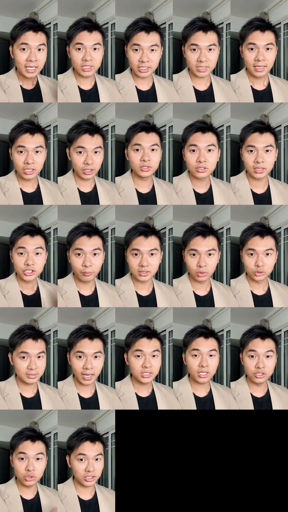

X｜Zhen Zhu：Codex 參考 Rachel Skill 串 HeyGen + MiniMax 做數字人口播

Zhen Zhu（@ZhenZhu200）在 X 分享一個「Codex + Agent Skill + HeyGen + MiniMax」數字人口播案例。他讓 Codex 參考 Rachel / Zesee 的 `rachel-digital-human-production` skill，輸入近期小紅書上一家「火箭線束公司」的口播稿、iPhone 語音備忘錄錄下的聲音、一張自拍照，以及 MiniMax / HeyGen API keys，最後由 Codex 生成一段約 11 秒、720p、9:16 的數字人講解影片。
貼文主張
貼文重點包括：
- Codex 參考 `rachel-digital-human-production` skill 執行流程。
- MiniMax 用於音色克隆 / narration，作者提到 `speech-02-hd`。
- HeyGen 用於 image-to-video / avatar talking head。
- 作者主觀評價：聲音很像，口播流利；缺點是牙齒、嘴唇與本人略有差異。
- 作者自述成本：HeyGen 11 秒 720p 9:16 實扣 0.55 美金，MiniMax 音色克隆約 0.8 元人民幣。
以上成本只視為單次作者自述快照；實際扣費會受方案、模型、解析度、時長、地區、優惠與 API 版本影響。
影片與截圖保存
已保存三類素材：
- 影片縮圖。
- 11 秒影片 contact sheet。
- 貼文附圖 / 流程截圖。
contact sheet 可見同一位男性直式半身口播，穿米色西裝外套、黑色上衣，在室內窗邊背景前對鏡頭說話；多格畫面呈現明顯嘴型變化，符合 talking-head / lipsync 數字人示範。畫面沒有字幕，也無法從靜態圖直接驗證聲音相似度。
貼文附圖不是 HeyGen 計費頁，而是聊天/任務流程截圖：可見一段中文口播稿、錄音要求、`火箭线束口播音色克隆.m4a` 音訊檔，以及一張自拍照素材。因此本文不把該截圖作為費用證據，只作為「輸入素材與流程」證據。
GitHub Skill 查核
`Jingyi-Wu-Richael/rachel-digital-human-production` GitHub repo 查核結果：
- stars：約 531。
- forks：約 66。
- license：MIT。
- created_at：2026-07-16。
- README 定位：Codex Skill for producing authorized digital-human talking-head videos with MiniMax overseas voice cloning and HeyGen Image-to-Video。
README 的重點很務實：
- 在付費 API 呼叫前驗證 script、portrait、voice-source assets。
- 用 MiniMax 做 voice cloning 與 narration。
- 用 HeyGen 做 image-driven digital-human video。
- 先生成 15 秒 preview，再等待使用者明確批准 full 1080p generation。
- 追蹤 `voice_id`、`asset_id`、`video_id`、job status 與 outputs。
- 不把 API keys、Authorization headers、signed URLs、private portraits、voice samples、generated client videos 放進 skill package。
這些設計和貼文案例高度吻合：重點不是「一個神奇 prompt」，而是把有成本、有隱私、有授權風險的數字人流程封裝成 Codex 可執行的 guardrailed playbook。
官方來源查核
HeyGen Developers 的 Create Video 文件說明，可以從 HeyGen avatar 或任意 image 生成影片，支援 scripts 或 pre-recorded audio 做 lip-sync，並支援 Avatar III / IV / V engines；文件也列出 resolution 可選 720p、1080p、4k 等欄位。
MiniMax 官方 Audio / API 文件確認其提供語音、音樂與 T2A / speech 相關能力；MiniMax API Platform 也定位為多模態 API 開放平台。貼文指定的 `speech-02-hd` 與音色克隆成本細節需以 MiniMax 當下 dashboard / pricing / API 文件為準，本文只保存作者實測描述。
與既有 KB 的關係
AI 學習雷達已有 Rachel「Codex + Remotion 影片日更管線升級到數字人自動化」條目，以及 HeyGen 官方 AI video platform 條目。本篇是後續實測案例：把原先「數字人作為外部生成層」的概念，具體落成 Codex skill + MiniMax voice clone + HeyGen image-to-video 的可重複流程。
實務提醒
- 不要把 API key 直接貼在公開對話、截圖或 repo；應使用 `.env`、本機 secret store 或 CI secrets，且 source archive 一律不得保存實際 key。
- 聲音克隆與自拍數字人必須取得本人明確同意；若是員工、客戶、講師或創辦人，需保留授權紀錄。
- 對外發布時應標示 AI 合成 / 數字人，避免觀眾誤以為是本人即時錄製。
- 先做 10–15 秒 preview，再人工審稿與批准全片，避免錯誤腳本、錯口型或費用暴衝。
- 企業案例、火箭線束公司、SpaceX/NASA/Senra 等專有名詞需要人工事實查核，不能只靠 AI 產稿。
- 口播太流利也可能產生「不自然可信度」問題，必要時要調整語速、停頓與語氣。